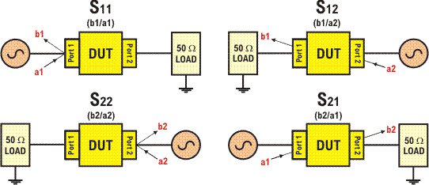

DSP_RF_S_PARAMETER()
This function is used for full two-port S-parameters. The A terms (signals to the DUT) and B terms (signals from the DUT) for the four S-parameters are illustrated below ("a1" means the A term at port 1, and so on). Each of the four S-parameters uses one A term and one B term; therefore, this function takes in a total of 8 arrays of captured data.

This API is defined in the header file /opt/hp93000/soc/prod_com/include/MAPI/libdsp.h.
Syntax
DSP_RF_S_PARAMETER(const ARRAY_COMPLEX & s11aData,
const ARRAY_COMPLEX & s11bData,
const ARRAY_COMPLEX & s21aData,
const ARRAY_COMPLEX & s21bData,
const ARRAY_COMPLEX & s12aData,
const ARRAY_COMPLEX & s12bData,
const ARRAY_COMPLEX & s22aData,
const ARRAY_COMPLEX & s22bData,
const ARRAY_D & measParams,
const INT site
ARRAY_D & sparamResult); I/O |
Parameter |
Notes |
|---|---|---|
I |
s11aData |
Complex arrays, representing the captured data for the following:
NOTE: See the illustration above, which identifies the a and b terms for the various measurements. |
I |
s11bData |
|
I |
s21aData |
|
I |
s21bData |
|
I |
s12aData |
|
I |
s12bData |
|
I |
s22aData |
|
I |
s22bData |
|
I |
measParams |
An array of doubles which contains information about the properties of the measurement definition, together with frequency-dependent calibration data. |
I |
site |
Site ID |
O |
sparamResults |
An ARRAY_D (array of doubles), with each successive pair of doubles representing the magnitude power (in dB) and phase (in degrees) of S11, S21, S12, and S22. |
Examples
Example 1
The following example retrieves the mag and phase values
ARRAY_COMPLEX s11a = MEAS_DEF("mySpMeas").getComplexWaveform(1);
ARRAY_COMPLEX s11b = MEAS_DEF("mySpMeas").getComplexWaveform(2);
ARRAY_COMPLEX s21a = MEAS_DEF("mySpMeas").getComplexWaveform(3);
ARRAY_COMPLEX s21b = MEAS_DEF("mySpMeas").getComplexWaveform(4);
ARRAY_COMPLEX s12a = MEAS_DEF("mySpMeas").getComplexWaveform(5);
ARRAY_COMPLEX s12b = MEAS_DEF("mySpMeas").getComplexWaveform(6);
ARRAY_COMPLEX s22a = MEAS_DEF("mySpMeas").getComplexWaveform(7);
ARRAY_COMPLEX s22b = MEAS_DEF("mySpMeas").getComplexWaveform(8);
ARRAY_D measParams = MEAS_DEF("mySpMeas").getParameters(TM::RF_MEAS_SPARAM, 0);
ARRAY_D results(TM::RF_DSP_SPARAM_RESULT_SIZE);
DSP_RF_S_PARAMETER(s11a, s11b, s21a, s21b, s12a, s12b, s22a, s22b,
measParams,1 , results);The results could be printed to the report window as follows:
cout << "S11(mag, phase) = " << results[TM::S11_MAG_RESULT_IDX] << " [dB], " << results[TM::S11_PHASE_RESULT_IDX] << " [degrees]" << endl; cout << "S21(mag, phase) = " << results[TM::S21_MAG_RESULT_IDX] << " [dB], " << results[TM::S21_PHASE_RESULT_IDX] << " [degrees]" << endl; cout << "S12(mag, phase) = " << results[TM::S12_MAG_RESULT_IDX] << " [dB], " << results[TM::S12_PHASE_RESULT_IDX] << " [degrees]" << endl; cout << "S22(mag, phase) = " << results[TM::S22_MAG_RESULT_IDX] << " [dB], " << results[TM::S22_PHASE_RESULT_IDX] << " [degrees]" << endl;
Example 2
The following example retrieves the magnitude, phase, real, and imaginary values. The real and imaginary part of the complex S-parameter results can also be directly accessed,
provided that the results array is initialized with size of TM::RF_DSP_SPARAM_RESULT_SIZE*2.
ARRAY_COMPLEX s11a = MEAS_DEF("mySpMeas").getComplexWaveform(1);
ARRAY_COMPLEX s11b = MEAS_DEF("mySpMeas").getComplexWaveform(2);
ARRAY_COMPLEX s21a = MEAS_DEF("mySpMeas").getComplexWaveform(3);
ARRAY_COMPLEX s21b = MEAS_DEF("mySpMeas").getComplexWaveform(4);
ARRAY_COMPLEX s12a = MEAS_DEF("mySpMeas").getComplexWaveform(5);
ARRAY_COMPLEX s12b = MEAS_DEF("mySpMeas").getComplexWaveform(6);
ARRAY_COMPLEX s22a = MEAS_DEF("mySpMeas").getComplexWaveform(7);
ARRAY_COMPLEX s22b = MEAS_DEF("mySpMeas").getComplexWaveform(8);
ARRAY_D measParams = MEAS_DEF("mySpMeas").getParameters(TM::RF_MEAS_SPARAM, 0);
ARRAY_D results(2 * TM::RF_DSP_SPARAM_RESULT_SIZE);
DSP_RF_S_PARAMETER(s11a, s11b, s21a, s21b, s12a, s12b, s22a, s22b, measParams,1 , results);
cout << "S11(mag, phase) = " << results[TM::S11_MAG_RESULT_IDX] << " [dB], " << results[TM::S11_PHASE_RESULT_IDX] << " [degrees]" << endl;
cout << "S21(mag, phase) = " << results[TM::S21_MAG_RESULT_IDX] << " [dB], " << results[TM::S21_PHASE_RESULT_IDX] << " [degrees]" << endl;
cout << "S12(mag, phase) = " << results[TM::S12_MAG_RESULT_IDX] << " [dB], " << results[TM::S12_PHASE_RESULT_IDX] << " [degrees]" << endl;
cout << "S22(mag, phase) = " << results[TM::S22_MAG_RESULT_IDX] << " [dB], " << results[TM::S22_PHASE_RESULT_IDX] << " [degrees]" << endl;
cout << "S11(re, im) = " << results[TM::S11_REAL_RESULT_IDX] << ", " << results[TM::S11_IMAG_RESULT_IDX] << endl;
cout << "S21(re, im) = " << results[TM::S21_REAL_RESULT_IDX] << ", " << results[TM::S21_IMAG_RESULT_IDX] << endl;
cout << "S12(re, im) = " << results[TM::S12_REAL_RESULT_IDX] << ", " << results[TM::S12_IMAG_RESULT_IDX] << endl;
cout << "S22(re, im) = " << results[TM::S22_REAL_RESULT_IDX] << ", " << results[TM::S22_IMAG_RESULT_IDX] << endl;Functional changes
- Introduced before SmarTest 6.3.2